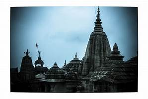

Famous Temples You Must Visit


Shri Ganesh Mandir Tekdi is one of the oldest temples in the city of Nagpur and is one of the most famous too. It is dedicated to Lord Ganesha. The temple is situated at the top of a hill and thus the name of Tekdi Ganesh as tekdi in Marathi means hill. It is an extremely serene place, ideal for those who like to worship in solitude away from the noise of the city. The temple is believed to be constructed over 250 years ago. The idol of Lord Ganesha's head is decorated with gold and has other silver ornaments. The devotees refer to the place as JagrutaDevasthan since pilgrims flock to the place from dawn till midnight. However, we would say visit this place late afternoon-ish to witness the beautiful setting of the sun and the lush greenery along with the cool air of the hilltop. Walk to the temple is also not very hard and quite a pleasant journey to soak in the wonders of nature around you.
Address:Sitabuldi, Nagpur, Maharashtra 440001
Timmings:6:00 AM - 12 :00 AM
Temple Website:http://www.ganeshmandirtekdi.org/
Best Time To Visit:Ganesh Chaturthi in August/September

Shirdi Sai Baba is needs no introduction. Not only in India but all across the globe is this saint and his powers revered. Although he is believed to be hailing from Shirdi (250 km East of India), temples in his name and devotion have been built all around the country. The Sai Baba temple located in Nagpur is a replica of the original Sai Baba temple located in Shirdi. The temple's construction was completed in the year 1979. Around 2000 visitors visit the temple every day while on Thursdays, the number increases to around 2500.
The idol of Sai Baba was brought to the temple by Shri BabulajiWarti and sculpted by Shri Talim of Mumbai. The special aspect of Sai Baba and his teachings include that of opposing religious rigidity and respect for all faiths and castes.
The idea of constructing a temple like Shirdi Mandir on a larger scale originated from Shri Sai Mandir Dhantoli. One body for this purpose was formed in 1971. For legal fulfillment one trust was formed in 1972 which was registered at same time. The present sight was purchased from Shri Banerjee in 1974 and Bhoomipujan was performed in 1976. The required funds were raised by way of donations, cultural programs. The main designer and Architect of the Mandir is Shri Shivdanmal who took pains in entire construction of Mandir.Approximately 2000 devotees visit the temple everyday, but on Thursdays this figure raises to more than 25000.This is a very old record ,I assume it to be atleast 5-8 times more than the figure mentioned here.
Address: Wardha Rd, Chhatrapati Road, Vikas Nagar, Sawarkar Nagar, Gajanan Nagar, Nagpur, Maharashtra 440025
Timmings:6:00 AM - 10 :00 PM
Temple Website:http://www.saimandirnagpur.com/
Best Time To Visit:Dusherra and Thursdays.


Telankhedi Hanuman temple located in the western region of Nagpur is situated on the southern slopes of seminary hills and is devoted to Lord Hanuman and Lord Ganesha who is also the presiding deity of the temple. It also shares the shore of the Telankadi Lake. Thus this temple too is extremely tranquil and pleasing to one's mind and soul. There are also life-size marble idols dedicated to Devi Durga, Lord Shiva, Radhakrishna, Lord Rama, Santoshi Mata, Devi Gayatri and Lord Vishnu. The temple remains crowded with devotees on Tuesdays and Saturdays.
It is said that Lord Rama was relaxing at this hilltop in Nagpur, and hence came into existence this temple.
Address: Seminary Hills, Nagpur, Maharashtra 440006
Timmings:8 AM - 8 PM
Best Time To Visit:Tuesdays and Saturdays, Hanuman Jayanti and Ram Navami days.
Swaminarayan temple located near Middle Ring road is the largest Swaminarayan temple among over 1,000 temples set up by Swaminarayan Sanstha across the world. It's grand architecture and illuminating hues during the night forms the main attraction. The temple holds regular Satsang programmes and has idols of various deities such as Shri Shukhshaiya, Shri Ghanshyam Maharaj, Shri AksharPuroshuttam, Shri YogijiMaharaj and many more. The architecture is stunning so take some time out to just marvel at that. Beautiful carvings on the roof and if one goes just before sunset, the temple looks ever more glorious with the rays shining on it directly.
Address:Swaminarayan Marg, Ring Rd, Wathoda Layout, Nagpur, Maharashtra 440030
Timmings:8:30 AM - 12: 00 noon and 4 PM - 8 PM
Temple Website:https://www.baps.org/Global-Network/India/Nagpur/Visitor-Info.aspx
Best Time To Visit:Annual Diwali and Annakut celebrations

Hazarat Tajjuddin Dargah located in the heart of Nagpur is dedicated to HazaratTajjuddinAulia Baba who was one of the five masters or Sadgurus of his age. He was a Sufi master born in 1268 A. H. in Madras. He had to spend sixteen years of life in a mental asylum in confinement as he was declared as a lunatic before turning the same place into a place of worship. The Dargah is considered to be holy and spiritual by the Islamic people and is open to people of all religions and sects. The Dargah includes a large mosque and shrine, with simple yet elegant architecture that shall leave you inspired and at peace. Known as the universal place of worship, people following distinct religions come here for their mannats.
Address:Umreth Road, Near Dighori, Taj Bagh, Nagpur, Maharashtra 440009
Timmings:5:30 AM - 12: 00 noon and 2 PM - 9 PM
Temple Website:http://tajuddinbaba.com/
Best Time To Visit:Annual Urs Hazarat Baba Tajjuddin when thousands of devotees gather together.

Ramtek temple or Ram temple located at Ramtek area of Nagpur is dedicated to Lord Rama. According to popular belief, Lord Rama rested in this place while he was in exile before he went ahead to win over Lanka. Tek in Marathi means vow and thus Ramtek signifies 'Vow of Lord Rama'. The present temple is believed to be over 400 years old. It is away from the hustle bustle of city life and located inside a fort on a hill. Expect a tranquil atmosphere, the mystical surrounding of a fortress and a place of worship so very rich in Mythological value. It is also very popular and revered for its OM structure that is a whopping 350 feet long. The temple is also famous for its notorious yet super smart monkeys roaming around the premises. Cars can go up to the last step post which you need to climb around 60 steps to the temple.
Address:MH SH 249, Ramtek, Maharashtra 441106
Timmings:6 AM - 9 PM
Best Time To Visit:Ram Navami

Adasa Ganesha temple located 45 km away from the city of Nagpur is situated on a hillock. It's an ancient temple to Lord Ganesha and is considered to be 4,000 years old. The temple is considered one of the eight Ashta-Vinayaks in Vidarbha. The presiding deity is an idol of Ganesha standing 12 feet tall and 7 feet wide and is made of a monolithic stone. This idol is also believed by some to have evolved on its own. During Pausha in winters, a major fair is organized in the village and many pilgrims flock to the place during that time..
Address:MH SH 249, Ramtek, Maharashtra 441106
Timmings:6 AM - 9 PM
Temple Website:http://www.ganeshmandiraadasa.org/
Best Time To Visit:Ganesh Chaturthi

Dragon Palace temple located in Kampti area of Nagpur is also known as Lotus Temple of the city because of its exquisite architecture and scenic beauty. It is a Buddhist temple and forms one of the major attractions of the city. The temple was inaugurated in the year 1999 and is the best place if you are seeking for peace and serenity. It has a huge prayer hall and sandalwood idol of Lord Buddha. It's also politically significant as the temple marks the Indo-Japan friendship at the time. It was inaugurated by Nichiki Kato from Tokyo and also received financial aid for its construction from Japan. Vibrantly coloured walls and a pure, tranquil atmosphere alongside a great architectural design has made this a favourite for tourists alike.
Address:Dadasaheb Kumbhare Parisar, New Kamptee, Kamptee, Maharashtra 441001
Timmings:7 AM -7 PM
Temple Website:http://dragon-palace-temple.org/?page_id=871
Best Time To Visit:Early mornings or late evening to escape the heat.